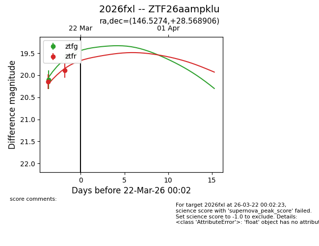
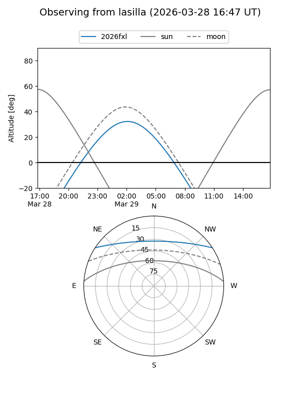
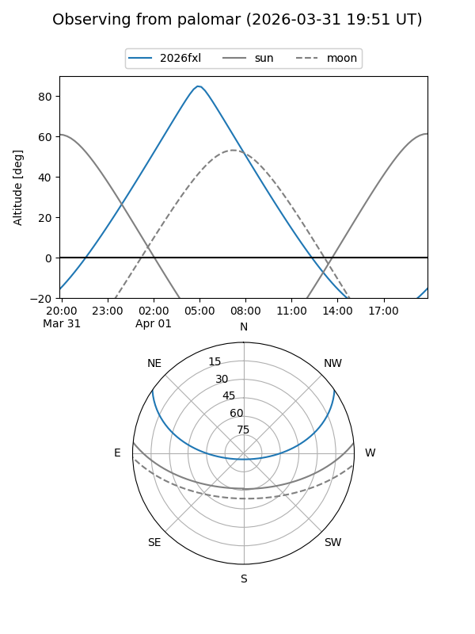
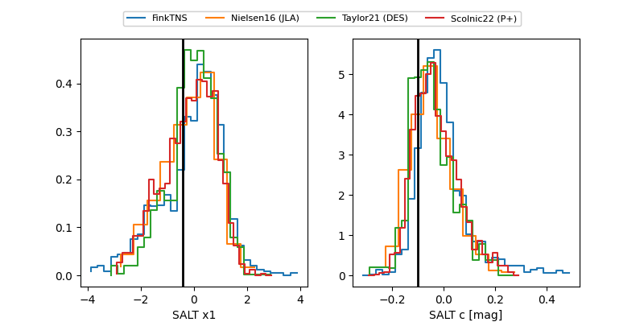

2026fxl
Target 2026fxl at 2026-03-22 00:04
Aliases and brokers:
FINK: link
Lasair: link
ALeRCE: link
TNS: link
YSE: link
alt names
ZTF26aampklu (ztf,fink_ztf)
2026fxl (tns,yse)
Coordinates:
equatorial (ra, dec) = 146.5274,+28.56891
equatorial (HMS+DMS) = 09:46:06.58,+28:34:08.06
galactic (l, b) = (199.7242,+49.26656)
Flags:
Photometry:
last ztfg=19.50, ztfr=19.89
3 ztfg, 2 ztfr detections
Lightcurve

Visibility


Additional plots
